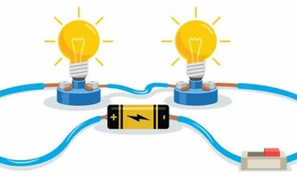
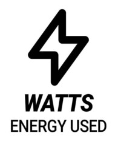
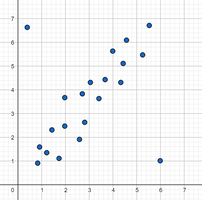

In this part we are going to present some important concepts of the project, usefull for the presentation.
Is the energy generated by themovement of electrons from one point to another; is an energy related to forces on electrically-charged particles and the movement of those particles. This energy is supplied bythe combination of current and electric potencial that is delivered by a circuit.
Is the international system of units (SI) standard unit of power (Energy per unit time), is the equivalent of one jouyeper second. Also, is used to specify the rate at which electrical energy isdissipated or the rate at which electromagnetic energy is radiated, absorbed or dissipated.
Uses dots to represent values for two different numeric variables. The position of each dot on the horizontal and vertical axis indicates values for an individual data point. Scatter Plots are graphics, that are used to observe relationships between variables.

Is a basic and commonly used type of predective analysis. The overall idea of regression is to examine two things:
- Does a set of predictor variables do a good job in predicting an outcome (dependent) variable?
- Which variable in particular are significant predictor of the outcome variable?
The variable is define by the formula:
y=c+b*x
y= Estimated dependent variable score.
c= Constant.
b= Regression coefficient.
x= Score on the independent variable.
Is energy derived from natural sources that are replanished at a higher rate than they are consumed (Sunlight-Wind). For example, are such sources that are constantly being replenished.
Some of them are:
- Solar energy: Is the most abundant of all energy resources.
- Wind Energy.
- Geothermal energy.
- Hydropower.
- Ocean energy.
- Bioenergy.